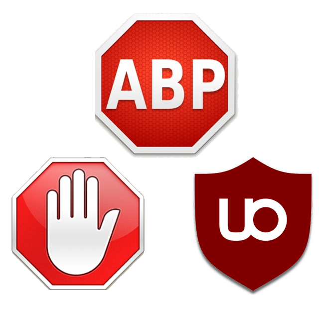

|
Les Bloqueurs de publicités se sont démocratiser dans les années 2010, ceux-ci permette de trier ce que votre navigateur affiche, et permet donc de retirer les pubs sur votre affichage.
|  |
2022 | Les combats contre Google débutent | Cela fait plusieurs année que Google mene une guerre avec les bloqueurs de pub |
2023 | Le combat s'envenime | Le 10 octobre 2023, Google investie des millions d'euro pour mener la vie dur aux
bloqueurs de publicités notamment Youtube. AdblockPlus, le plus gros bloqueurs de pub "abandonne". En 2011, le créateur d'ablock plus
s'associe avec deux profils commerciaux pour crée eye/o, ils ont par la suite racheter adblock, et ublock. Par la suite, en l'échange
d'argent, adblock a signé discretement des contrats avec d'énorme boite de pub pour les laisser passer leur pub (Taboola, Criteo, et enfin GOOGLE)
Google qui est le posséseur de Youtube. Un partenariat qui coute plusieurs dizaines de millions à google. L'info fait comme un electrochoque pour
certains petits génies, qui vont tous se retrouver à un endroit, le Github de Ublock Origin, un bloqueur de pub à part, bien plus petit.
Celui-c à été crée par un Quebéquoi en 2014. Elle s'est spécialisé par l'injection de scriplet, un scriptlet est comme une librairie, ceux ci
permettent d'appliquer une logique très puissante. Par exemple, un scriptlet appeller trusted-click-element permet de degager très facilement
les cliques qui empeche une page de charger, par exemple, la demande de cookie intrusive. Suite a cela, ils vont en 4 lignes de codes |
2024 | La fin du combat, mais il est déjà perdu d'avance... |